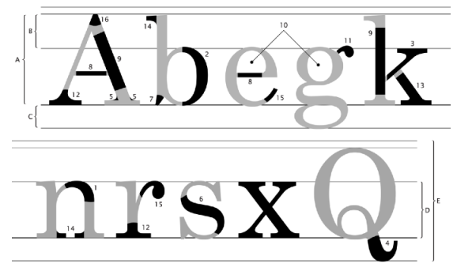
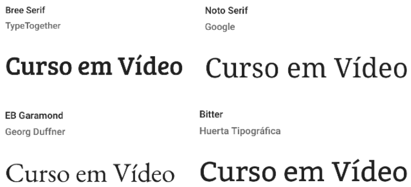
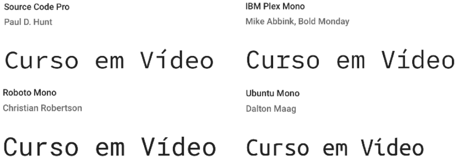
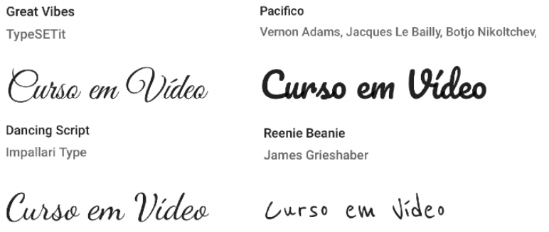
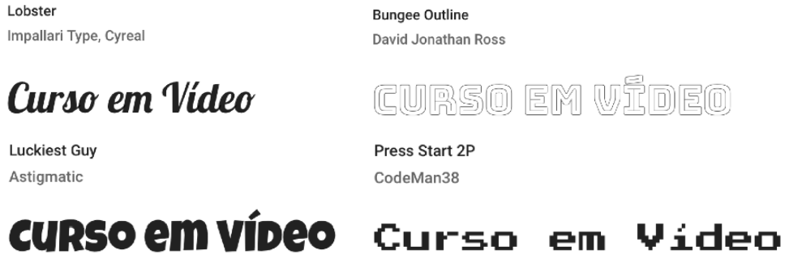

Anatomia do tipo
A - Altura das maiúsculas: altura que as letras maiúsculas vão ocupar. Geralmente um pouco menor que a soma da ascendente com a mediana (< B + D)
B - Ascendente: parte das letras maiúsculas que se ergue acima da linha mediana
C - Descendente: parte das letras minúsculas que passa por baixo da linha de base.
D - Altura-X: também chamada de mediana, define o tamanho das letras minúsculas. Tem esse nome, pois se baseia no tamanho da letra x minúscula.
E - Corpo: é a soma de quatro medidas: ascendente + altura-x + descendente + espaço de reserva. É o tamanho total da letra. É o valor que escolhemos ao configurar o tamanho da fonte em um texto.
1 - Arco: presente em letras minúsculas. Uma linha curva que nasce em na haste principal.
2 - Barriga: curva em uma letra maiúscula ou minúscula, fechada, ligada à haste vertical em dois pontos.
3 - Braço: traço horizontal ou inclinado, ligado à haste vertical principal de uma letra maiúscula ou minúscula.
4 - Cauda: apêndice do corpo de algumas letras (g, j, J, K, Q, R), que fica abaixo da linha base.
5 - Enlace: a forma como uma haste, linha ou filete se liga a um arremate, a uma serifa ou a um terminal. Pode ser angular ou curvilíneo.
6 - Espinha: curva e contracurva estrutural da letra S.
7 - Esporão: uma projeção que encontramos nas letras b e G.
8 - Filete: haste horizontal ou inclinada, fechada nas duas extremidades, por duas hastes ou por uma curva.
9 - Haste: traço principal de uma letra, geralmente vertical.
10 - Olho: espaço em branco, fechado, dentro de uma letra.
11 - Orelha: apêndice presente na letra g, que pode ser em gota, botão, bandeira ou gancho.
12 - Pé: terminal ou serifa horizontal que arremata uma perna na parte de baixo.
13 - Perna: haste vertical ou inclinada com um extremidade livre (ou com um pé) e outra extremidade ligada ao corpo da letra.
14 - Serifa: também chamada de apoio ou patilha. Pequenas retas que ornamentam as hastes de alguns tipos.
15 - Terminal: forma que arremata a extremidade de uma linha curva de uma letra.
16 - Vértice: também chamada de ápice. Formada pela convergência de duas hastes que se encontram. Pode ser pontiagudo, oblíquo, plano ou redondo.
Font-weight
Tipos de fontes
Serifadas
Não-serifadas

Monoespaçadas
Script ou handwriting
Display ou comemorativas
